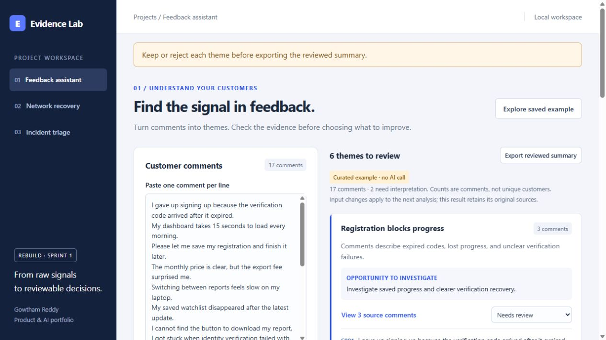

01
Inspect themes and their sources
Paste up to 50 comments or load the labeled saved example. Theme cards retain source IDs and comment counts; ambiguous inputs stay visible for interpretation. Counts represent comments, not unique customers.
Applied AI · Feedback analysis
A working feedback review assistant that groups comments into source-linked themes, supports edits and keep/reject decisions, and gates summary export on review.
Working Evidence Lab rebuild. The saved example is hand-authored; optional live analysis uses OpenAI. September 29 evaluation results use synthetic labels and do not reproduce historical résumé metrics.
Explore the screenshots, walkthrough and measured results below. The interactive application currently runs locally; contact me for a demonstration.

01 / Walkthrough
A sequence of workflows to explain the project.
01
Paste up to 50 comments or load the labeled saved example. Theme cards retain source IDs and comment counts; ambiguous inputs stay visible for interpretation. Counts represent comments, not unique customers.
02
Expand source comments, edit a summary, and keep or reject every theme. Export is blocked until every theme has a review decision. The reviewed Markdown export preserves masked sources.
02 / Engineering
Product teams need to inspect the evidence behind a summary before prioritizing work. This rebuilt prototype supports small batches and deliberate review, using synthetic comments for demonstrations and evaluation.
Implemented batch validation, best-effort identifier masking, structured model output, source-ID and coverage checks, a browser theme editor, keep/reject review, and Markdown export. Saved examples support a clearly labeled demonstration without an API call.
Plain HTML, CSS and JavaScript call a loopback Python API. The live path sends the masked batch to the OpenAI Responses API; application validators check source references and complete input accounting. Feedback does not use retrieval or a vector database.
Keep complete source comments beside summaries. Treat frequency as a count rather than a priority score. Use schema and reference validation for structural correctness, while preserving human review for semantic accuracy. Keep the API key server-side.
The September 29 saved live report records 188/200 exact category-set matches (94%) on synthetic, template-derived comments. Twelve disagreements are retained. Prompt v1 and v2 each matched 19/20 labels on the comparison subset; this does not establish a prompt-quality improvement. The suite test report records 71 passing tests. Today’s browser check confirmed the saved example, source expansion, and export review gate.
94% is agreement with authored synthetic labels, not independently labeled customer feedback. Best-effort masking does not guarantee removal of all sensitive content; valid citations do not establish semantic truth. Recorded live evaluations date to September 29, 2026; fresh API availability and billing were not retested for this portfolio update. Saved examples are hand-authored and labeled. Data and network devices are synthetic. No customer study, production performance, physical-device recovery, or public deployment is claimed. Source stays private.
03 / Research roadmap
Research question
Does the assistant preserve uncommon but important feedback when it summarizes a larger batch?
Create a held-out, de-identified set with manually reviewed themes and source links. Compare a baseline with versioned prompt and retrieval configurations, then inspect errors for both frequent and less common themes.
This is a proposed extension. Results will depend on the labeling rubric and dataset; no new findings are claimed.
Explore the available project resources.